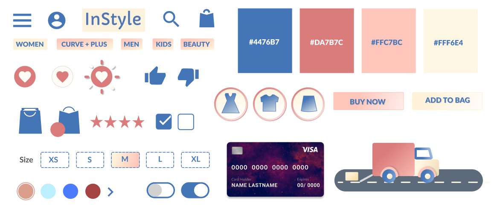

Instyle
Role: UI Designer AND Microinteraction Designer
Tools: Figma and Adobe After Effects
Duration: 10 weeks
InStyle is a mobile app that allows you to shop for clothes online. They sell trendy clothes at affordable prices which attracts a huge clientele. The app is fun and light with a lot of emphasize on micro interactions.
Challenge
Understand and create micro-interaction in After Effects
Create an app that shows off the micro-interactions in a way that seems purposeful and adds to the design and
functionality of the app. The main task is to experiment with creating different micro-interaction using tools like After Effects
Our main challenge was bringing the friendliness and fun back into the WokWorks ordering process to restore the welcoming experience that customers adore.
Research
User Persona, SWOT Analysis and Interviews
Brainstorming ideas for potential apps that meet the requirement and have the scope for multiple micro-interactions.
Learning more about the power of micro-interactions to make the app more lively and interesting.
Carrying out user research to understand the target audience and the micro-interactions they would enjoy the most.
Wireframes
Created multiple wireframes to brainstorm different ideas and ways of portraying the interface. The task flow covers all the potential pages on the app. The aim was to best utilize the space to present all the necessary information in a way that did not feel overwhelming.
Components
High Fidelity Screens
Microinteractions
Add to Bag
Animation of a bag opening up with the items falling in it.
Favorite
Animation that resembles a heart popping.

Remove Item
The item that is deleted swooshes off the page
Credit Card
Animation of a credit card being built with a flip for the cvv.
High Fidelity Prototype
The high-fidelity prototype was created using the existing designs from Figma and editing them in Adobe AfterEffects to watch the micro-interactions play out in real-time. A user flow - buying a dress - is used to show the micro-interactions on the different pages.